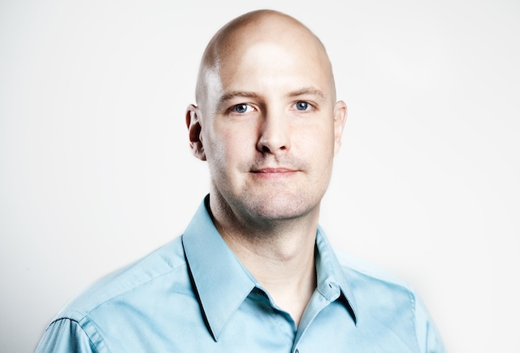

Joseph R. Kiniry, Ph.D.
Joseph Kiniry started his first company while in his early twenties and has since founded five technology firms. In addition, he has also has helped get another half dozen companies off the ground by providing business, technical, and managerial advice. For the past decade, Joe has been an independent consultant in, among other things, formal methods, distributed systems, software engineering, Internet security and computer graphics.
Joe earned a Ph.D. from the Department of Computer Science from the the California Institute of Technology for his work in formal methods for reuse-centric software and knowledge engineering of distributed, object-oriented, component-based systems and languages. He also earned a master's degree in Computer Science from Caltech in 1998, another M.S. from the University of Massachusetts in 1994, and two B.S. degrees from Florida State University in 1992. Prior to attending Caltech, Joe held positions at several companies including Sprint, where he was co-architect of their Internet Service product, and the OSF Research Institute where, as senior software researcher, he was instrumental in jump-starting their efforts in Java. Joe also held a support position for two years at Smith College in Northampton, MA.
Between October 2002 and October 2004 Joe was a postdoctoral scholar in the Security of Systems Group in the Nijmegen Institute for Computing and Information Science at the Radboud University Nijmegen. There he worked on smart card systems, the PVS higher-order theorem prover, the Loop compiler, a higher-order coalgebraic semantics of Java, the KOA Internet voting system, the Java Modeling Language (JML), and ESC/Java2.
From October 2004 to December 2009 Joe was a Lecturer (an Assistant Professor with tenure, to translate for North American readers) in the School of Computer Science and Informatics at University College Dublin.
From January 2010 to August 2012, Joe was an Associate Professor at the IT University of Copenhagen (ITU) and is a member of the Software Development (SDG) and Programming, Logic, and Semantics (PLS) groups.
From September 2012 to September 2013 he was the Head of Software Engineering and Full Professor MSO in the Department of Informatics and Mathematical Modeling at the Technical University of Denmark.
During that time he was also a Guest Professor at the IT University of Copenhagen.
Over all of his years in academia he led the KindSoftware: Software Engineering with Applied Formal Methods research group and was a co-founder of the Systems Research Group at UCD.
As of January 2014 Joe is a Principal Investigator at Galois in Portland, OR. There he leads or contributes to several program areas, including verifiable elections, high-assurance cryptography, security and correctness audits-for-good, and rigorous software engineering.
During his many years of association with the computing industry, Joe has authored nearly fifty technical papers in over a half a dozen fields including formal methods, distributed systems, software engineering, security, and computer graphics. He has written columns and invited articles for major magazines like IEEE Internet Computing and CORBA Developer and has edited two books and is writing one of his own. In addition, he has run popular workshops at academic conferences, has been on the Program Committee of around fifty major conferences, including, e.g., OOPSLA 2001, has given invited talks at dozens of conferences, and has taught courses on a variety of topics including distributed systems, software engineering, computer graphics, databases, and formal methods to nearly a thousand students.
Joe has also contributed to the Open Source community since the late 1980s, contributing to dozens of popular tools and technologies, as well as releasing a wide variety of his own packages, some of which are available here at KindSoftware.